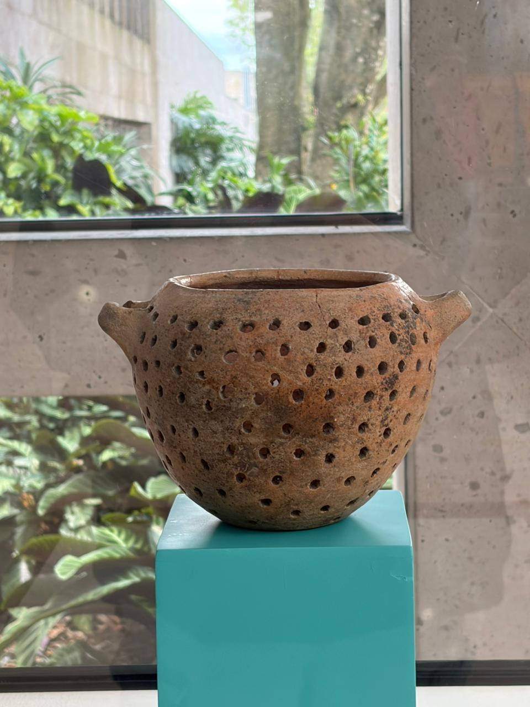

La pichancha, conocida también como "tlalchiquihuite", es un ingenioso utensilio de barro con pequeñas perforaciones que data de la época prehispánica. Su diseño permite lavar y escurrir el nixtamal, separando el maíz del "nejayote" (agua con cal). Es un testimonio de la avanzada cultura culinaria de pueblos como los huastecos.